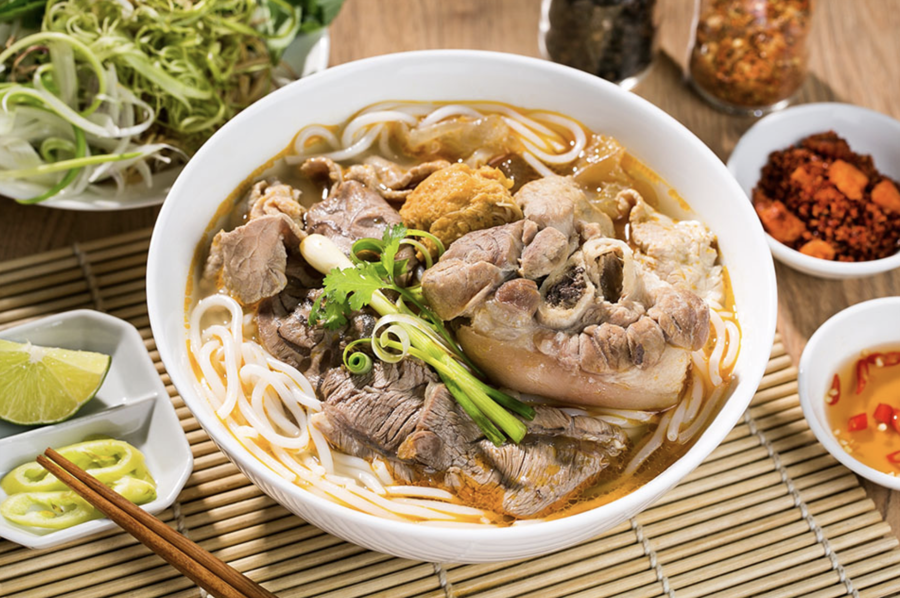
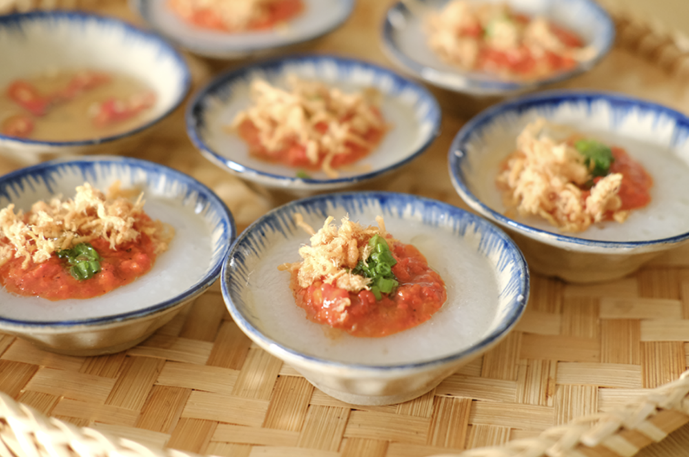

Món ăn nổi tiếng nhất là bún bò Huế, với nước dùng đậm đà, được ninh từ xương bò, hòa quyện cùng gia vị như sả, ớt và hành. Món bún này thường được ăn kèm với thịt bò, giò heo và rau sống, tạo nên một hương vị khó quên.
Bên cạnh bún bò, cơm hến là một món ăn mang đậm hương vị xứ Huế, được làm từ cơm trắng, hến xào gia vị, ăn kèm với đậu phộng, rau sống và nước mắm chua ngọt. Món ăn này thể hiện sự giản dị nhưng rất đậm đà và thanh mát.

Bánh bèo là một món ăn nổi bật khác, với lớp bánh mềm mịn, nhân tôm và mỡ hành, được ăn kèm với nước mắm chua ngọt, khiến ai một lần thưởng thức cũng phải nhớ mãi.
Chè heo quay là món chè độc đáo của Huế, kết hợp giữa vị ngọt của chè và vị béo mặn của thịt heo quay. Món chè này thường được làm từ đậu, nếp, nước dừa và thịt heo quay thái mỏng. Sự hòa quyện giữa vị ngọt và mặn tạo nên một hương vị lạ miệng, thú vị, thích hợp cho những ngày nóng. Mặc dù không phổ biến, nhưng đây là một món ăn đặc sắc nếu bạn đến Huế.